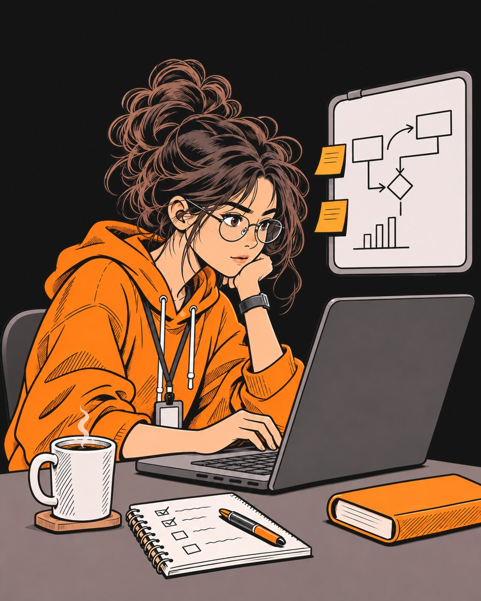
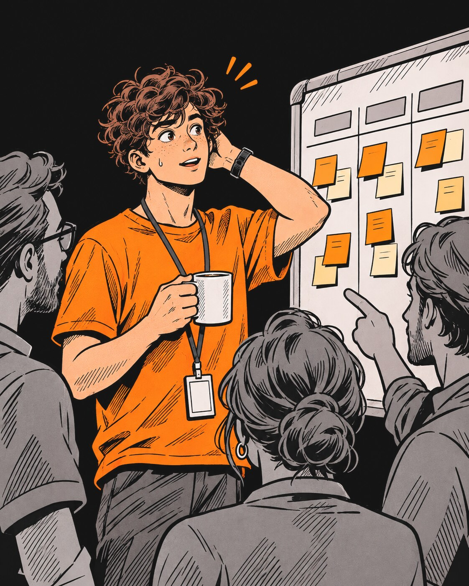
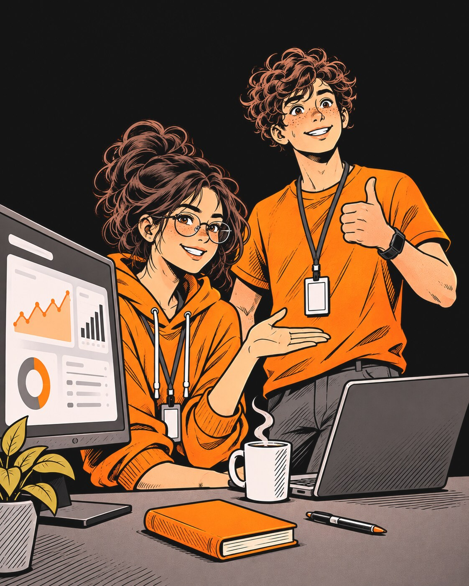
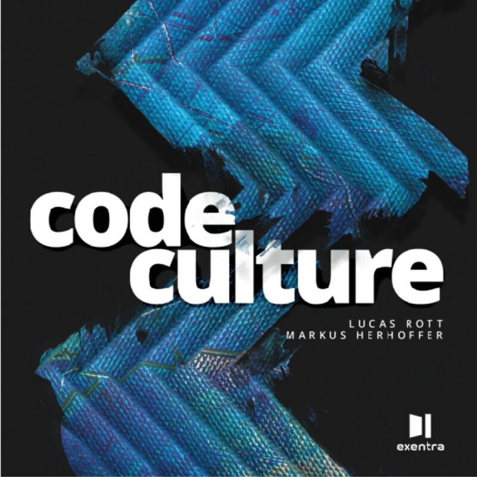

Praktikum
in der Softwareentwicklung sinnvoll nutzen
Markus Herhoffer · CTO EXP
Cookie Talks bei Neuland e.V. · 12. November 2026
Wer hier spricht
EXP · Company Snapshot
gegründet 2024
mit über 20 Jahren Erfahrung im Bereitstellen von Daten
30 hochmotivierte Mitarbeitende
UNSER PRODUKT · EXPLORE.DE
explore Die Agentic Twin Plattform
Digital Thread
verbindet PLM, ERP und IoT über die Zeit, die Daten bleiben in ihren Systemen
Agentic Twins
dynamische digitale Zwillinge von Produkt, Produktion und Organisation
Lora AI
KI-Co-Worker, der Zusammenhänge erkennt und Aktionen anstößt
Im Einsatz bei
Porsche, Mercedes-Benz, John Deere, Sumitomo Electric
Markus Herhoffer · CTO
Verantwortet Entwicklung, Architektur und die Praktika
12 Wochen.
480 Stunden.
Du kannst sie absitzen. Oder du machst daraus den wichtigsten Baustein deines Lebenslaufs.
Die Frage ist nur: wie?
01
AUSGANGSLAGE
Warum ein Praktikum heute mehr zählt als je zuvor
Ausgangslage
Was ein Praktikum leisten kann
Will ich das wirklich?
Backend, Frontend, Data, KI: Finde heraus, was dir Energie gibt und was nicht.
Orientierung
Wie bauen Profis Software?
Git-Workflow, Reviews, Tests, CI/CD: Das lernst du in keiner Vorlesung wirklich.
Handwerk
Wer bürgt für dich?
Ein Zeugnis, ein vorzeigbares Projekt und eine Person, die dich empfiehlt.
Referenz
Die Bewerbung, die du nicht schreiben musst
Wer im Praktikum überzeugt, bekommt oft das Angebot. Ohne 40 Bewerbungen vorher.
Einstieg
Ausgangslage
Junior-Code schreibt heute die KI.
Gelernt wird unter der Wasserlinie.
Code tippen
übernimmt zunehmend die KI
Alles darunter
lernst du nur in der Praxis
Fremden Code lesen und reviewen
Debuggen im echten System
Architektur-Entscheidungen abwägen
Verantwortung für Produktion tragen
02
ZWEI WEGE
Die Weggabelung am ersten Tag
Zwei Wege
Am ersten Tag entscheidet sich, welches Praktikum du bekommst
DAS LABOR
Forschungsprojekt / PoC
Eine offene Frage. Viel Freiheit. Meistens allein.
DIE WERKSTATT
Teil eines Teams
Echter Produktcode. Feste Prozesse. Mittendrin.
Anekdote · Das Labor
Paula Prototyp,
die Forscherin
Ihre Aufgabe: „Finde heraus, ob ein LLM unsere Stücklisten automatisch klassifizieren kann.“ Eigener Tisch, eigene GPU, ein Check-in pro Woche.

Anekdote · Die Werkstatt

Tom Teamplayer,
der Neue im Sprint
Sein erstes Ticket: „Fehlermeldung beim Login korrigieren.“ Eine Zeile Code. Drei Tage bis zum Merge.
03
DAS LABOR
Das isolierte Forschungsprojekt / der Proof of Concept
Das Labor · Forschungsprojekt
Paulas zwölf Wochen
Woche 1–2
Verstehen
Fragestellung schärfen, Paper und Tools sichten
Woche 3–8
Bauen und Iterieren
Prototyp bauen, verwerfen, neu bauen. Viel Freiheit, viel KI-Unterstützung. Und kaum jemand, der den Code gegenliest.
Woche 9–10
Messen
Ergebnisse evaluieren, Grenzen dokumentieren
Woche 11–12
Zeigen
Demo vor dem Management, Doku, Empfehlung
DAS SETTING
1 Praktikantin1 Betreuerin1 offene Frage1 Check-in pro Woche
Und danach? Der PoC wird zum Produkt oder verschwindet in der Schublade.
Das Labor · Forschungsprojekt
Freiheit hat ihren Preis
Vorteile
Nachteile
Eigene Story: perfekt für Bewerbung und Abschlussarbeit
Große Freiheit bei Technologie, Vorgehen und Tempo
Neueste Technologie statt Legacy-Code
Sichtbares Ergebnis: deine Demo vor dem Management
Strukturieren lernen: aus einer offenen Frage ein Ergebnis machen
Einsam: wenig Feedback, kaum Code-Reviews
Kein Produktions-Handwerk: CI/CD, Tests und Betrieb fehlen oft
Schublade: Viele PoCs gehen nie in Produktion
Abhängig von einer Betreuung, die Zeit haben muss
Wegwerf-Code: schnell generiert, aber ohne Qualität
04
DIE WERKSTATT
Mittendrin, als Teil eines Teams
Die Werkstatt · Im Team
Toms Alltag: ein Kreislauf, jeden Tag
Ticket
Branch
Code + Tests
Merge Request
Review
CI/CD
Deploy
Feedback
DAS SETTING
5–8 Kolleg:innenPair-ProgrammingReview bei jedem MergeTägliches Stand-upEchte Nutzer:innen
„In Woche 1 hat Tom genau eine Zeile Code geändert. Und dabei mehr über echte Software gelernt als in einem Semester.“
Seine Teamleiterin, nach dem Praktikum
Die Werkstatt · Im Team
Mittendrin heißt auch: eingebunden
Vorteile
Nachteile
Echtes Handwerk: Git-Flow, Reviews, Tests, CI/CD, Betrieb
Feedback täglich durch Reviews und Pairing
Code lesen lernen in großen, fremden Codebasen
Netzwerk: Viele kennen deine Arbeit und empfehlen dich
Dein Code geht live: echte Nutzer, echte Verantwortung
Langer Anlauf: Setup, Domäne und Prozesse verstehen
Kleine Tickets: Dein Beitrag ist schwer sichtbar
Wenig Gestaltung: Stack und Prozesse sind gesetzt
Ticket-Abarbeiter ohne Blick aufs Ganze
Lieferdruck: wenig Zeit, sich um dich zu kümmern
05
VERGLEICH
Welcher Weg passt zu dir?
Vergleich
Zwei Profile, zwei Stärken
Labor · Forschungsprojekt
Das Labor gewinnt bei Freiheit und der Story, die du erzählen kannst.
Die Werkstatt gewinnt bei Handwerk, Feedback und Netzwerk.
Subjektive Einschätzung aus CTO-Sicht, Skala 1–5
Vergleich
Zwei Lernkurven
1Onboarding-Tal: Setup, Domäne, Prozesse. Tom fühlt sich langsam.
2Kreuzung: Tägliches Feedback zahlt Zinseszins.
3Plateau: Ohne Reviews lernt Paula mehr über ihr Thema, aber kaum noch übers Handwerk.
Schematische Darstellung, keine Messdaten
Vergleich
Was passt zu dir? Wenn du …
… schon weißt, dass du Richtung Forschung oder Abschlussarbeit willst
Labor… noch nie mit Code-Reviews und CI/CD gearbeitet hast
Werkstatt… dich gut selbst strukturierst und gern allein tüftelst
Labor… im Anschluss eine Festanstellung suchst
Werkstatt… ein Thema mitbringst, für das du brennst
Labor… lernen willst, wie Profis Software im Alltag bauen
Werkstatt06
SPIELREGELN
So holst du das Maximum raus, egal auf welchem Weg
Spielregeln
Sechs Regeln für dein Praktikum
01
Ziel am ersten Tag
Schreib auf: Was kann ich am Ende, was ich heute noch nicht kann?
02
Mentor:in einfordern
Fester Termin, jede Woche, 30 Minuten. Nicht verhandelbar.
03
Jede Woche eine Demo
Fünf Minuten reichen. Gegen Einsamkeit im PoC, gegen Unsichtbarkeit im Team.
04
Lerntagebuch führen
Was habe ich gelernt, wo hing ich fest? Gold wert fürs nächste Bewerbungsgespräch.
05
KI ja, aber erklärbar
Nutze jedes Tool. Aber erkläre jede Zeile, die du einreichst.
06
Abschluss sichern
Präsentation, Zeugnis, Referenzkontakt, Portfolio. NDA vorher klären.
Spielregeln
Der Sweet Spot: der PoC im Team
Forschungsprojekt
Freiheit
eigene Story
neue Technologie
Team
Reviews und CI/CD
tägliches Feedback
Netzwerk
Sweet Spot
Eigenes Thema
im Team-Repo
mit Code-Reviews
Pairing mit dem Team
Demo im Sprint-Review
Anekdote · Ein Jahr später
Paula und Tom,
ein Jahr später
Paula
Ab Woche 6 hat sie ihren PoC ins Team-Repo gezogen, mit Reviews und Pipeline. Heute ist er ein Feature im Produkt.
Tom
In Woche 9 hat er sein erstes eigenes Feature im Sprint-Review gezeigt. Heute ist er Werkstudent im Team.

Ein Praktikum ist nicht dafür da, dass du Code lieferst.
Sondern dafür, dass du lernst, wie Software entsteht.
Danke!

Video-Podcast mit Markus und Lucas über Code, Technews und Nerdkultur
Praktikum bei EXP?
Sprich mich nach dem Vortrag an oder schreib an karriere@explore.de
Alle offenen Stellen
explore.de/karriere